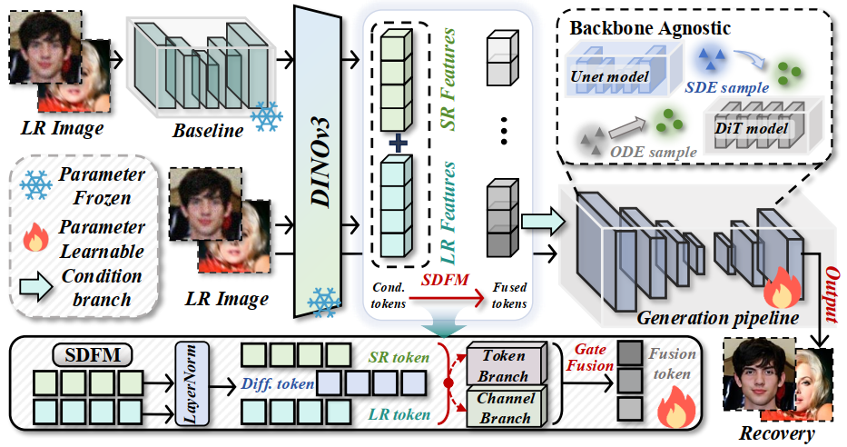
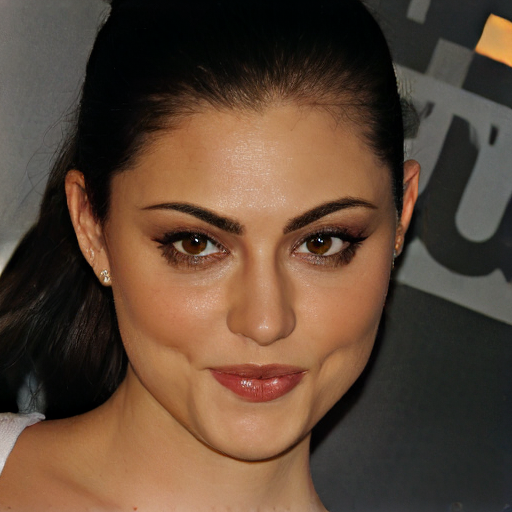
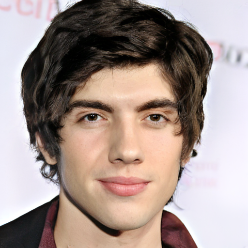
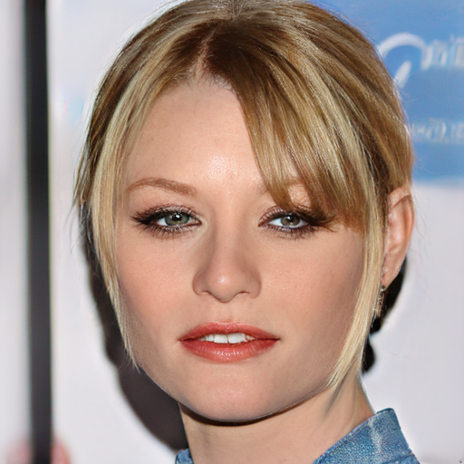
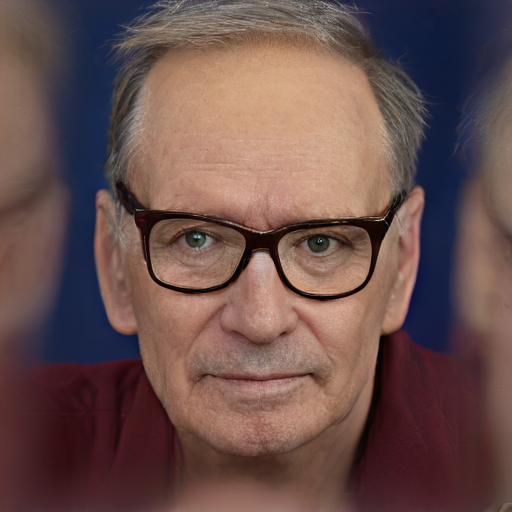
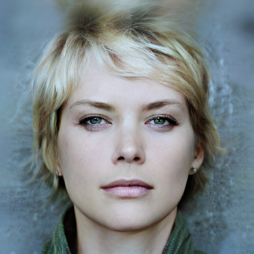
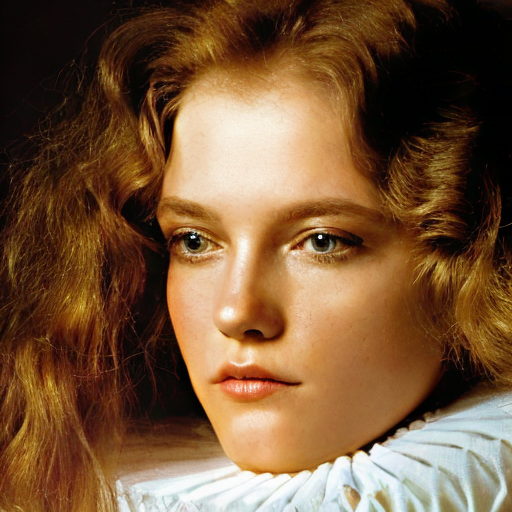

Face restoration under complex degradations still remains an ill-posed inverse problem due to severe information loss.
Although diffusion models benefit from strong generative priors, most methods still condition only on low-quality inputs,
making it difficult to recover identity-critical details under heavy degradations. In this work, we propose HDRFace,
a High-Dimensional Representation conditioned Face restoration framework that injects semantically rich priors into the conditional flow without modifying the generative backbone.
Our pipeline first obtains a structurally reliable intermediate restoration with an off-the-shelf restorer,
then uses a pretrained high-dimensional feature encoder to extract fine-grained facial representations from both the low-quality input and the intermediate result,
and injects them as additional conditions for generation. We further introduce SDFM,
a Structure-Detail aware adaptive Fusion Mechanism that emphasizes global constraints during structure modeling and strengthens representation guidance during detail synthesis,
balancing structural consistency and detail fidelity. To validate the generalization ability of our method,
we implement the proposed framework on two generative models, SD V2.1-base and Qwen-Image, and consistently observe stable and coherent performance gains across different architectures.
Method
Method Overview
Overview of our proposed HDRFace framework.

Pipeline figure — place at assets/images/pipeline.png
1
High-Dimensional Priors —
We propose a high-dimensional representation conditioned face restoration framework that injects DINOv2 semantic features into the conditional branch
to provide priors beyond low-quality inputs and ease the ill-posedness caused by missing information.
2
Adaptive Multi-Source Fusion —
We design an architecture-independent module SDFM that adaptively fuses low-quality inputs with high-dimensional features,
balancing structural consistency and detail fidelity without changing the generative backbone.
3
Backbone-Agnostic Generalization —
Extensive experiments on SD V2.1-base and Qwen-Image demonstrate strong generalization and architecture independence with consistent restoration quality gains.
Visual Results
Visual Results
Qualitative comparison on the CelebA-Test dataset.
Drag the center divider to compare the degraded input (left) with our restored result (right).
Click any image to enlarge.

⬅ Degraded InputOurs (Restored) ➡
⬅ Degraded InputOurs (Restored) ➡
⬅ Degraded InputOurs (Restored) ➡

⬅ Degraded InputOurs (Restored) ➡
Hover over any image to magnify the region under your cursor and inspect fine-grained details.




Citation
Cite This Work
If you find our work useful, please consider citing:
@article{wang2026hdrface,
@misc{wang2026hdrfacerethinkingfacerestoration,
title={HDRFace: Rethinking Face Restoration with High-Dimensional Representation},
author={Zirui Wang and Xianhui Lin and Yi Dong and Bo Wei and Gangjian Zhang and Siteng Ma and Zebiao Zheng and Xing Liu and Hong Gu and Minjing Dong},
year={2026},
eprint={2605.14821},
archivePrefix={arXiv},
primaryClass={cs.CV},
url={https://arxiv.org/abs/2605.14821},
}
}